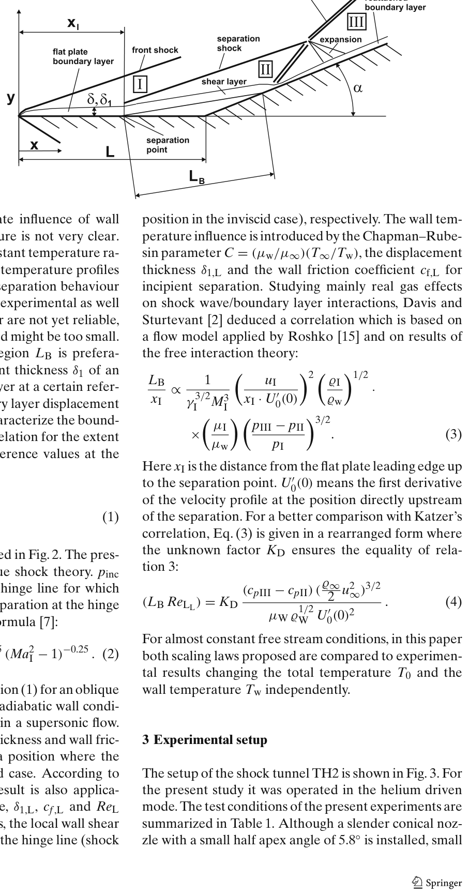
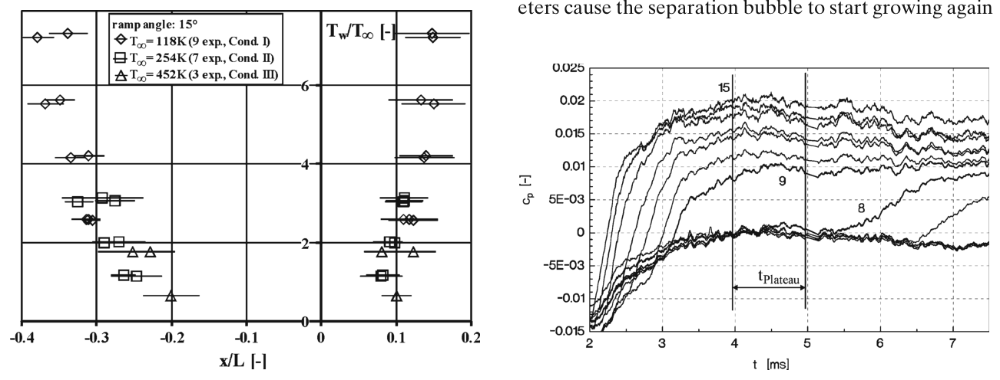
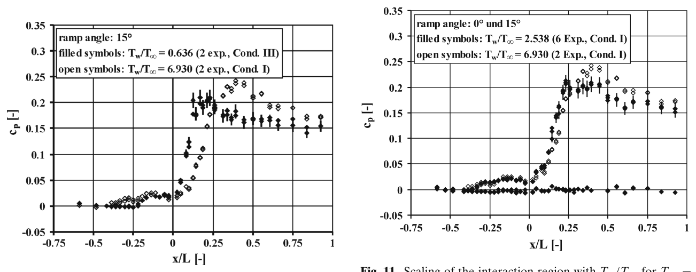
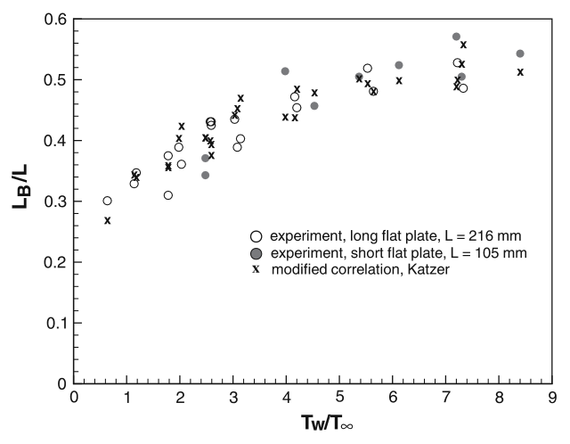

01中文摘要
高超声速风洞虽能较好复现马赫数、雷诺数和总焓，但风洞与飞行的壁面温度差异会改变激波/边界层干扰的缩放规律和流动特性，短时激波风洞尤其如此。为克服这一不足，本文采用可预热的 15° 斜坡模型开展实验，在实验开始前将表面调节到任意温度。压力与热流测量清楚显示表面温度和来流温度变化的影响，纹影和红外测量提供流场与热分布佐证；测量与理论、数值结果吻合良好。作者还用分离处局部边界层条件检验 Katzer 和 Davis 提出的分离泡缩放律，得到部分证实。
原始摘要（英文/原文）
Although important flow parameters as Mach number, Reynolds number and total enthalpy can be reproduced in most hypersonic experiments quite well, due to different surface temperature effects in wind tunnel and flight, scaling as well as specific flow properties of shock wave/boundary layer interactions are different. This especially holds for short-duration facilities like, e.g. shock tunnels where due to short running times the models remain more or less at ambient temperature. To overcome this shortcoming, an experimental study has been conducted using a preheatable ramp model with 15◦ ramp angle. This allowed us to adjust the surfaces to an arbitrary temperature just before the experiment started. Pressure and heat flux measurements clearly showed the effect of varying surface and free stream temperatures. These results are supported by schlieren pictures and infrared measurements. The comparison of the measurements with theoretical and numerical results shows a good agreement. Separation bubble scaling laws proposed by Katzer and Davis have been applied and partially confirmed using the local conditions of the boundary layer at separation.
02阅读说明
类型：实验研究（激波风洞可加热斜坡模型），并引用经验关联式与数值解作对比；材料范围：bundle 含第1–12页全文与16项抓图（图2、4、5、7–18及表2），图1、3、6未抓取；图表可读性：正文与图注完整，双栏OCR偶有错位，式(1)–(5)已用PDF第3、10页核对；信息完整度：表1–2工况、模型与测点、重复性、结果和结论齐全，数值方法细节因引用[14]未展开。 文章类型：期刊
03一句话核心与三句话摘要
15°加热斜坡实验表明，Tw/T∞升高显著增大高超声速层流分离泡，修正Katzer关联式可描述其缩放。
- 高超声速短时风洞模型难以达到飞行壁温，且壁温与总温对激波/边界层干扰分离区的独立影响尚不完全清楚（p.1–2）。 原文明确
- 在TH2激波风洞中用可预热15°斜坡模型独立改变T0与Tw，结合纹影、压力、热流和红外测量，发现分离泡随Tw/T∞升高显著增大（p.4–8）。 AI概括
- 分离位置近似抛物线、再附位置近似线性随Tw/T∞变化；修正Katzer关联式（KK=4.4−0.2Tw/T∞）比Davis–Sturtevant关联式更好地描述该缩放（p.6–11）。 AI概括
04核心内容清单
| 要点 | 类型 | 重要性 | 原文依据 | 属性 |
|---|---|---|---|---|
| 建立可预热15°斜坡模型实验能力，在TH2风洞实现Tw/T∞=0.64–6.93的独立壁温/总温调节。 | 实验能力 | A | p.4–7、Fig.10 | 原文明确 |
| 纹影与压力分布一致表明：Tw/T∞升高使分离泡显著增大。 | 核心现象 | A | Fig.7、Fig.10，p.6–7 | 原文明确 |
| 分离点由x/L=−0.17上游移至−0.37，再附点更大幅度向下游移动。 | 定量结果 | A | p.7 | 原文明确 |
| 分离位置近似抛物线、再附位置近似线性依赖Tw/T∞（在三个工况Mach/Re接近的前提下）。 | 参数规律 | A | Fig.8，p.6 | 原文明确 |
| 再附峰值压力随分离泡增大而升高；最大压比差异约25%，仅Mach数差异只能解释4.3%。 | 定量结果 | A | p.7、Fig.10–11 | 原文明确 |
| 分离区平台压力系数约0.019，压力在测点9–13间连续上升至平台。 | 压力特征 | B | Fig.9，p.6 | 原文明确 |
| 高壁温时铰链附近Stanton数较低；Tw/T∞=3.04时自由剪切层在x/L=0.1–0.15再附并呈转捩特征。 | 热流/转捩 | B | Fig.12，p.8 | 原文明确 |
| 红外热像在再附区显示流向条纹，指示Görtler涡，支持自由剪切层转捩判断。 | 测量证据 | B | Fig.13，p.8 | 原文明确 |
| 修正Katzer关联式KK=4.4−0.2Tw/T∞可描述宽温度比下的分离泡缩放，优于Davis–Sturtevant式(4)。 | 关联式 | A | 式(5)、Fig.16–18，p.9–11 | 原文明确 |
| 长平板（转捩）与短平板（全层流）数据在修正关联式下一致，说明自由剪切层转捩不影响分离长度缩放。 | 对照实验 | B | Fig.16、Fig.18，p.10–11 | 原文明确 |
| 时均压力显示分离泡在t≈4 ms充分发展，平台维持约1 ms；5.5 ms后来流参数变化使气泡再次增长。 | 非定常/试验窗口 | C | Fig.9，p.6–7 | 原文明确 |
05引言：研究问题与领域缺口
高超声速飞行器进气道、体襟翼等部位存在大范围分离的激波/边界层干扰；短时激波风洞中模型壁温接近环境温度，无法复现飞行中的绝热壁温或辐射平衡壁温，导致风洞数据难以外推到飞行（p.1–2）。已有加热技术（VKI、CIRA等）虽提高了壁温，但壁温与总温/来流温度的独立作用仍不明确，且不同试验中改变温度比时往往同时改变了边界层温度剖面（p.2–3）。本文目标是利用可预热15°斜坡模型在TH2风洞中独立调节Tw与T0，量化Tw/T∞对分离泡尺寸、压力和热流的影响，并用Katzer与Davis–Sturtevant的缩放关联式检验实验数据（p.2–3、p.10）。
06流动条件与几何构型
| 项目 | 数值/描述 | 依据 | 备注 |
|---|---|---|---|
| 来流工况 I（表1） | p0=7.1 MPa；h0=1.68 MJ/kg；pt2=49 kPa；p∞=567 Pa；T∞=118 K；u∞=1,766 m/s；M∞=8.1；Re∞,l=4.6×10^6 m^-1；ttest=3.0 ms | 表1，p.4 | |
| 来流工况 II（表1） | p0=21.2 MPa；h0=3.3 MJ/kg；pt2=131 kPa；p∞=1,680 Pa；T∞=254 K；u∞=2,465 m/s；M∞=7.7；Re∞,l=3.5×10^6 m^-1；ttest=2.5 ms | 表1，p.4 | |
| 来流工况 III（表1） | p0=35.4 MPa；h0=5.0 MJ/kg；pt2=224 kPa；p∞=3,357 Pa；T∞=452 K；u∞=3,022 m/s；M∞=7.1；Re∞,l=3.1×10^6 m^-1；ttest=1.0 ms | 表1，p.4 | |
| 模型几何与加热 | 15°斜坡；平板前体长L=216 mm；W/L=0.92；R/L=1.18；不锈钢平板与斜坡；Tw,max≈840 K；8个独立电阻加热元件；热膨胀导致坡角偏差<±0.1° | p.4、Fig.4 | |
| T0=1,520 K，α=0° | Tw/T0=0.193、0.329、0.441、0.553 | 表2，p.5 | |
| T0=1,520 K，α=15° | Tw/T0=0.193、0.329、0.441、0.553 | 表2，p.5 | |
| T0=2,500 K | Tw/T0=0.117、0.218、0.328 | 表2，p.5 | |
| T0=3,640 K | Tw/T0=0.080、0.231 | 表2，p.5 | |
| 实现的壁温/来流温度比 | Tw/T∞=0.64–6.93；0.64对应无预热、最高来流温度，6.93对应Tw=840 K、最低来流温度 | p.7 | |
| 模型姿态与驱动方式 | 斜坡模型零攻角置于试验段；TH2风洞氦驱动模式；斜坡角15° | p.3–4、p.11 |
07核心现象与关键参数
| 参数 | 定义 | 数值 | 关系/说明 | 依据 |
|---|---|---|---|---|
| M∞ | 来流Mach数 | 8.1 / 7.7 / 7.1（工况 I/II/III） | Mach数与Reynolds数在三个工况间变化较小，残余影响由关联式消除 | 表1，p.4 |
| Re∞,l | 以来流单位长度定义的Reynolds数 | 4.6 / 3.5 / 3.1 ×10^6 m^-1（工况 I/II/III） | 层流分离；长平板工况在再附前/再附处转捩 | 表1，p.4 |
| Tw/T∞ | 壁温与来流静温之比 | 0.64–6.93 | 主控无量纲温度参数；增大使分离泡增大 | p.2、p.7 |
| Tw/T0 | 壁温与总温之比 | 0.080–0.553（表2全部组合） | 给定M∞与攻角时与Tw/T∞等效 | 表2，p.5；p.2 |
| cp,plateau | 分离区平台压力系数 | ≈0.019（Cond. II，Tw=293 K） | 平台压力与分离激波后压力对应 | p.6、Fig.9 |
| xsep/L | 分离点位置（以平板前体长L=216 mm无量纲化） | −0.17 → −0.37（Tw/T∞增大） | 随Tw/T∞增大向上游移动 | p.7 |
| xreat/L | 再附点位置（以L无量纲化） | Tw/T∞=3.04时再附位于x/L≈0.1–0.15 | 随Tw/T∞增大向下游移动，近似线性 | p.8、Fig.8 |
| 峰值压力系数差 | 不同温度比下再附区最大压力系数之差 | 约25%；仅Mach数差异预期4.3% | 分离泡越大，再附峰值压力越高 | p.7 |
| 压力系数不确定度 | 实验压力系数的不确定度 | 7% | 图中以竖线表示 | p.7 |
| KK | Katzer关联式(1)的比例常数 | 4.4−0.2Tw/T∞；原绝热壁值4.4 | 随Tw/T∞增大而略减；修正式将参考量取在分离点 | 式(5)，p.10 |
| LB/δ1,L | 分离泡长度与分离点处平板边界层位移厚度之比 | 按式(1)缩放；δ1,L、ReL取分离点，cf,L取铰链线（初始分离） | 与C/M_I^3、√ReL及(pIII−pinc)/pI成正比 | 式(1)，p.3、p.10 |
| 来流重复性 | 多次试验来流参数的标准差 | M∞≤4%；Re∞≤13%；Ts≤6% | 每个工况至少2次试验 | p.5 |
| 压力系统上升时间 | 空腔/压力传感器系统响应上升时间 | 最高壁温时3.5 ms | 接近工况II/III的可用试验时间 | p.5 |
08方法与数据
实验在TH2氦驱动激波风洞完成；模型为15°斜坡，平板前体长L=216 mm，W/L=0.92、R/L=1.18以保证二维性，平板与斜坡由不锈钢制成，8个独立电阻加热元件可将壁温加热至Tw,max≈840 K，热膨胀引起的坡角偏差<±0.1°（p.4）。测量包括42个Kulite压阻压力传感器（测压孔内径0.6 mm，传感器置于冷却装置）和20个自制同轴K型热电偶，另有彩色纹影与红外热像（预热阶段270 Hz，实验中线扫描38 kHz）（p.4–5）。来流由球头驻点热流与试验段静压标定；三个工况I–III的M∞=8.1/7.7/7.1、Re∞,l=4.6/3.5/3.1×10^6 m^-1、有效试验时间3.0/2.5/1.0 ms（表1，p.4）。每个工况至少重复2次，M∞、Re∞、Ts的标准差分别≤4%、13%、6%；压力系数不确定度为7%（p.5、p.7）。数据处理上将实验与斜激波理论、自由干扰理论及Reinartz等[14]的全层流Navier–Stokes解对比；缩放关联式中的δ1,L、U′0(0)、cf,L按van Driest方法计算，并将参考位置由铰链线改为分离点（p.8–10）。
| 项目 | 内容 | 依据 | 备注 |
|---|---|---|---|
| 实验设施 | TH2激波风洞，氦驱动模式；锥形喷管半角5.8°；试验段存在小的轴向自由流梯度并已标定 | p.3–4 | 自由流参数用球头驻点热流与静压探针确定 |
| 模型与加热 | 15°斜坡；L=216 mm；W/L=0.92；R/L=1.18；不锈钢；8个独立电阻加热元件；Tw,max≈840 K | p.4、Fig.4 | 热膨胀使坡角偏差<±0.1° |
| 压力测量 | 42个Kulite压阻传感器（高固有频率、高灵敏度）；测压孔内径0.6 mm；不锈钢管连接；传感器冷却装置维持室温 | p.4–5 | 高壁温下系统上升时间3.5 ms |
| 热流测量 | 20个自制同轴K型热电偶 | p.4 | 用于Stanton数分布；横向布置造成散点 |
| 流场显示 | 彩色纹影，记录分离与再附位置 | p.5 | 沿光路积分，受有限展长三维效应影响 |
| 红外热像 | 预热阶段270 Hz；实验阶段38 kHz线扫描；用黑体源做CCD均匀性标定 | p.5 | 用于壁温分布与再附区Görtler条纹 |
| 来流标定 | 球头驻点热流+试验段静压；考虑喷管轴向梯度 | p.4 | 引用[8,11,12] |
| 重复性 | 每个工况至少2次；M∞、Re∞、Ts标准差≤4%、13%、6%；壁温分布散差在几个百分点内 | p.5 | 激波风洞典型水平 |
| 理论对比 | 斜激波理论（pIII）、自由干扰理论（平台压力）、Katzer式(1)与Davis–Sturtevant式(4) | p.3、p.8–9 | 自由干扰理论结果计入喷管轴向梯度 |
| 数值对比 | Reinartz等[14]的全层流Navier–Stokes解 | p.8–9 | 未计入实验中的喷管轴向梯度 |
| 边界层参数计算 | van Driest方法计算δ1、U′0(0)、cf；缩放参考位置取分离点，cf,L取铰链线 | p.10 | 这是使Katzer关联式适用于本文数据的关键改动 |
09核心推导与公式
原文未给出从守恒律出发的完整解析推导；以下仅列出材料中可核对的定义或建模链，不补写教科书推导。
本文是实验研究，正文没有从控制方程出发的推导。第2节直接引用Katzer的层流分离泡缩放关联式（式1、2）和Davis–Sturtevant基于Roshko模型与自由干扰理论的关联式（式3、4）；第5节仅用实验数据拟合修正常数KK（式5），并用长/短平板数据检验。
关键假设
- Katzer关联式原针对绝热壁、层流边界层、斜激波反射；作者按自由干扰理论将其用于斜坡流（p.3）。
- 缩放时δ1,L、cf,L与ReL取铰链线处的值；cf,L按初始分离（incipient separation）取值（p.3、p.10）。
- 修正关联式把δ1与Re的参考位置改到分离点，cf,L仍取铰链线值（p.10）。
- 式(5)为经验线性拟合，其适用温度比范围由本文实验覆盖（约0.64–6.93）（p.10）。
适用边界：拟合基于15°斜坡、M∞≈7.1–8.1、层流分离的实验；式(4)中常数c的物理含义受限于材料，无法确认；作者未给出关联式系数的置信区间或不确定度传播，也未验证其他斜坡角、Mach数与湍流干扰工况。
10结果：主要发现与关键证据
纹影（Fig.7）与压力系数分布（Fig.10）一致显示：Tw/T∞从0.64增至6.93时分离泡显著增大，分离点由x/L=−0.17上游移至−0.37，再附点以更大位移向下游移动（p.6–7）。Fig.8表明分离位置近似按抛物线、再附位置近似按线性随Tw/T∞变化。平台压力系数约为0.019；再附峰值压力随分离泡增大而升高，最大压力系数差约25%，而仅由工况Mach数差异预期的差值为4.3%（p.6–7）。热流方面，高壁温时铰链附近Stanton数较低；Tw/T∞=3.04时自由剪切层在x/L=0.1–0.15再附并呈转捩特征，红外图像显示再附区流向条纹，指示Görtler涡（Fig.12–13，p.8）。缩放方面，修正Katzer关联式KK=4.4−0.2Tw/T∞能同时关联长平板（L=216 mm，发生转捩）与短平板（L=105 mm，全层流）数据，而Davis–Sturtevant式(4)的KD分散明显更大（Fig.16–18，p.9–11）。
| 发现 | 证据 | 证据类型 | 强度 | 位置 | 属性 |
|---|---|---|---|---|---|
| Tw/T∞升高使高超声速15°斜坡层流分离泡显著增大，纹影与压力测量一致。 | Fig.7纹影对比；Fig.10压力系数分布中分离点上游移、再附点下游移 | 实验现象 | 强 | p.6–7 | 原文明确 |
| 分离点由x/L=−0.17移至−0.37，再附点移动幅度更大；分离位置近似抛物线、再附位置近似线性依赖Tw/T∞。 | Fig.8分离/再附位置随Tw/T∞的变化；正文给出−0.17→−0.37 | 定量规律 | 强 | p.6–7、Fig.8 | 原文明确 |
| 再附峰值压力随分离泡增大而升高，最大压力系数差约25%，而仅Mach数差异预期4.3%。 | Fig.10–11压力系数分布；正文比较理想斜激波理论 | 定量结果 | 强 | p.7 | 原文明确 |
| 高壁温使铰链附近Stanton数降低；再附区自由剪切层呈转捩特征，并伴随Görtler涡。 | Fig.12 Stanton数分布与层流/湍流理论对比；Fig.13红外流向条纹；Tw/T∞=3.04时再附位于x/L=0.1–0.15 | 热流/稳定性 | 中 | p.8 | 原文明确 |
| 修正Katzer关联式（KK=4.4−0.2Tw/T∞）能描述宽温度比下分离泡缩放，且优于Davis–Sturtevant式(4)。 | Fig.16中KK随Tw/T∞的线性趋势；Fig.17中KD分散更大；Fig.18长/短平板数据collapse | 关联式验证 | 强 | p.9–11、式(5) | 原文明确 |
| 长平板（L=216 mm，发生转捩）与短平板（L=105 mm，全层流）的分离泡数据在修正关联式下一致，转捩不影响分离长度缩放。 | Fig.16、Fig.18中空心/实心符号重合 | 对照实验 | 中 | p.10–11 | 原文明确 |
| 时均压力表明分离泡在t≈4 ms充分发展，平台维持约1 ms；5.5 ms后来流参数变化使气泡再次增长。 | Fig.9时间分辨压力；测点8在5.5 ms后压力上升 | 非定常测量 | 中 | p.6–7 | 原文明确 |
11机制解释与论证链
斜坡逆压梯度使平板层流边界层分离，形成分离激波、分离泡、平台区和再附激波（Fig.2）。壁温比升高使边界层温度剖面改变、边界层增厚、位移厚度增大，因而在相同逆压梯度下更易分离，分离点上游移动、再附点下游移动，分离泡增大（p.2–3、p.7）【原文明确】。再附峰值压力随分离泡增大而升高：更大的分离泡使自由剪切层从外层拾取更多动量，并在再附处转化为压力；因此壁温效应可使最大压力系数差达到约25%，远超过仅由Mach数差异预期的4.3%（p.7）【原文明确】。热流测量与红外条纹表明再附区发生转捩并出现Görtler涡，但长/短平板对比显示自由剪切层转捩对分离长度缩放无显著影响，作者推测分离泡内膨胀导致再层流化（p.8、p.10–11）【原文明确+AI概括】。
12讨论：结论、贡献与局限
作者将分离泡增大归因于壁温比升高导致平板边界层增厚、位移厚度增大：在相同几何与Mach数下，更厚的边界层更易被斜坡逆压梯度分离（p.2–3）。再附峰值压力随分离泡增大而升高，是因为更大的分离泡使自由剪切层从外层拾取更多动量，并在再附处转化为压力；该趋势在湍流干扰中也曾观察到（p.7）。热流测量表明再附区发生转捩，但长/短平板数据在修正Katzer关联式下重合，说明自由剪切层转捩对分离长度缩放无明显影响；作者推测分离泡内的膨胀可使流动再层流化（p.10–11）。局限包括：纹影沿光路积分，有限展长三维效应会影响分离/再附位置判读；前缘平板未加热，壁温沿流向不均匀；高壁温下压力系统上升时间增至3.5 ms，接近可用试验时间；热电偶横向布置造成热流散点（p.5–8）。作者还指出壁温与总温的独立作用、转捩起始条件及更宽Mach/Re范围仍需研究（p.2–3、p.11）。
作者结论
作者结论：在TH2风洞中用可预热15°斜坡模型成功扩展了壁温范围，并在试验时间内获得充分发展的分离泡；彩色纹影与压力测量清楚显示分离泡随Tw/T∞增大而增大，且可在提高T0的同时保持Tw/T∞近似不变（p.11）。再附区热流与理论/数值对比表明自由剪切层发生转捩，红外条纹指示Görtler涡；但长/短平板对比表明转捩对分离长度缩放无明显影响（p.11）。Katzer关联式经把参考量移到分离点并令KK=4.4−0.2Tw/T∞后，能较好描述壁温比对分离泡尺度的影响；Davis–Sturtevant关联式的数据分散更大（p.10–11）。
主要贡献
- 建立了可独立调节壁温与总温的高超声速加热斜坡实验平台，将Tw/T∞扩展到0.64–6.93（p.4–7）。
- 给出了壁温比升高使分离泡增大、分离点上移、再附点下移、再附峰值压力升高的系统实验证据（p.6–7）。
- 提出修正Katzer关联式KK=4.4−0.2Tw/T∞，并用全层流短平板实验证明自由剪切层转捩不影响分离长度缩放（p.10–11）。
- 利用时间分辨压力确定了分离泡建立时间与有效试验窗口（p.6–7）。
局限与未解决问题
作者承认的局限：纹影沿光路积分，有限展长三维效应会影响分离/再附位置判读；前缘平板未加热导致壁温沿流向不均匀；高壁温下压力系统上升时间3.5 ms，接近可用试验时间；热电偶横向布置使热流散点较大（p.5–8）。此外，数值对比仅引用全层流解且未计入喷管轴向梯度，实验与数值的剩余偏差可能来自该梯度（p.9）。AI识别的局限：只研究15°斜坡与三个Mach数接近的工况，未覆盖其他斜坡角、湍流分离或更高焓真实气体效应；Katzer修正式为经验线性拟合，未给出系数不确定度；转捩判据与Görtler涡波长未定量。
13对高速流动与工程的意义
对高速流动/工程的意义：说明短时风洞的冷壁条件会系统性低估分离泡尺寸与再附峰值压力，从而影响进气道、隔离器、体襟翼等部位的气动与热载荷外推；可借鉴的可预热模型、独立Tw/T0调节、时间分辨压力与红外热像组合，以及“参考量取分离点”的关联式修正方法【AI概括】。工程上可用修正Katzer关联式估计不同壁温比下的分离长度，但外推到其他几何/Mach数前需重新标定KK；本文不能回答湍流分离、真实气体效应及飞行辐射平衡壁温下的定量缩放【AI推断】。
14核心图件




15可引用原文素材
| 原文短句 | 可支持的观点 | 位置 | 使用建议 |
|---|---|---|---|
| “the main driving temperature parameter is not the wall temperature itself but the wall-to-free-stream-temperature ratio” | 壁温效应的主控参数是Tw/T∞而非Tw本身 | p.1 | 用于论证实验参数选择与风洞/飞行换算 |
| “the extension of the interaction region LB grows with increasing wall temperature ratio” | 分离区随壁温比增大 | p.2 | 作为研究假设/背景的直接引文 |
| “the separation position moves upstream from x/L = −0.17 to −0.37” | 壁温比升高使分离点上移 | p.7 | 定量引用分离位置变化 |
| “The maximum value of Tw/T∞ = 6.93 follows for the maximum wall temperature of Tw = 840 K” | 实验达到的最高温度比 | p.7 | 说明实验包线 |
| “the larger the separation bubble the more the free shear layer picks up momentum from the outer flow” | 再附峰值压力随分离泡增大的机制 | p.7 | 机制解释引用 |
| “the modified correlation of Katzer describes the wall temperature influence on the separated ramp flow much better than the correlation given by Eq. 4” | 修正Katzer关联式优于Davis–Sturtevant式 | p.10 | 关联式评价引用 |
| “there is obviously no effect of laminar/turbulent transition of the separated boundary layer on the scaling of the separation length” | 转捩不影响分离长度缩放 | p.11 | 讨论长/短平板对照结论 |
| “separation takes place between the positions 8 and 9” | 压力测点与纹影判读的分离位置一致 | p.7 | 说明测量互相验证 |
16最终核验
| 核验项 | 结论 |
|---|---|
| 仅基于全文 | 是。仅使用bundle全文、图注与抓图清单；公式(1)–(5)用PDF第3、10页核对；未引入外部文献或数据。 |
| A 级要点有依据 | 是。A级要点均有原文页码/图号/式号支撑：分离泡增大（Fig.7、Fig.10，p.6–7）、分离/再附位置（Fig.8、p.7）、峰值压力差（p.7）、修正Katzer式（式5、Fig.16–18，p.9–11）。 |
| 属性标注 | 是。three_sentence、core_points、findings均标注原文明确/AI概括/AI推断；机制段内也分别标注。 |
| 覆盖范围 | 覆盖IMRaD四节、表1–2、图2/4–5/7–18中的核心结果、式(1)–(5)、实验与数值/理论对比及作者结论；图1、3、6未抓取，未据其内容下结论。 |
| 无编造 | 是。未编造页码、图号、公式、数据；式(4)常数c的含义与表2粗体标记等不确定处已注明受限于材料，无法确认。 |
需回原文确认
- 表2中粗体数字对应哪些有数值结果的工况，bundle无法辨认粗体，需回原文核对。
- 式(4)中常数c的物理含义与量纲受限于材料，无法确认。
- Fig.10中不同Tw/T∞曲线是否全部为Cond. II，正文未逐条明示。
- 壁温沿流向不均匀（前缘未加热）对分离位置的定量影响未给出。
- 自由剪切层转捩起始Reynolds数及Görtler涡波长未定量。
- 修正Katzer关联式在其他斜坡角、Mach数与湍流分离下的适用性未验证。
- 压力系统3.5 ms上升时间对高壁温工况峰值压力的衰减修正未量化。
17关联文献
依据标签、板块、构型与作者脉络自动关联，可据此追踪同一问题的前序与后续工作。
18引用格式
选择期刊风格后复制；出处保留原刊名。BibTeX 可直接用于 LaTeX。
引用格式
Bleilebens, M. & Olivier, H. 2006 On the influence of elevated surface temperatures on hypersonic shock wave/boundary layer interaction at a heated ramp model. Shock Waves 15 (5), 301–312. https://doi.org/10.1007/s00193-006-0025-2
PDF上传 PDF 并更新本页
本页缺少全文、摘要或图件时，可在浏览器本地补入 PDF。解析完全在本机完成，不上传网络；完成后会更新本页的 PDF 打开链接、原摘要、IMRaD 机器抽取、关键句与含图页面。复杂的公式语义与中文深度解读仍以原文和既有精读记录为准。
Zotero 笔记摘录
研究了壁温比对分离泡尺度、压力、热流的影响（实验）。壁温比增大可以显著增大分离泡，再附位置向下游移动，修正了Katzer的关联式
壁温比 Tw/T∞ ：核心结论。 Tw/T∞ 增大，分离泡明显增大 ：分离点向上游移动（x/L 从约 -0.17 到 -0.37），再附点向下游移动；再附峰值压力随分离泡增大而升高。物理解释：壁温升高 → 边界层内温度升高、密度降低、边界层（尤其亚声速部分）增厚 → 更易分离 Ma、Re ：实验条件刻意保持在较窄范围，以突出壁温比；在几乎相同 Ma、Re 下，分离/再附位置主要随 Tw/T∞ 缩放。作者引用 Katzer：给定几何时，边界层行为和边界层边缘 Ma 主要控制分离 θ ：固定 15°，未系统变 θ；但 15° 已产生显著分离 Tw/T0 与 Tw/T∞ ：对给定 Ma 和攻角两者等价；作者用 Tw/T∞ 作为主要缩放参数 转捩影响 ：再附区热流接近湍流参考温度预测，红外显示 Görtler 涡，说明自由剪切层在再附附近转捩/过渡；但长平板与短平板（确保全层流）结果落在同一趋势，说明 再附区转捩对分离泡长度缩放没有明显影响 ，分离过程仍由层流控制 三维 ：模型宽/前体长 W/L=0.92、斜坡长/前体长 R/L=1.18，中心线近似二维；纹影沿光路积分可能含少量三维影响，但主要趋势来自壁温比 真实气体 ：总焓最高约 5 MJ/kg，未强调化学非平衡；主要按理想气体/可压缩层流处理